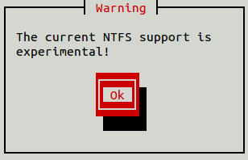

<!DOCTYPE html>
<html lang="en">
<head>
  <title>Backup</title>
  <meta charset="utf-8">
  <meta name="viewport" content="width=device-width, initial-scale=1">
  
  <link href='http://fonts.googleapis.com/css?family=Ubuntu+Mono|Ubuntu|Ubuntu+Condensed' rel='stylesheet' type='text/css'>

  <link rel="stylesheet" href="../css/bootstrap.min.css">
  <link rel="stylesheet" href="../css/jquery-ui.min.css">
  <link rel="stylesheet" href="../css/jquery.tocify.css">
  <link rel="stylesheet" href="../css/style_new.css" />
<!-- Scripts in bottom to speed up pageload-->
 

</head>
<body>
	
	
<div class="container-fluid">

<div class="row-fluid">
	
<div class="col-xs-3">
	
	<nav>
		
		<div id="toc">
		
			<div id="toc_headline"></div>
		
		</div>
		
	</nav>

</div><!-- Start slut 1. kolonne - TOC -->
	
<div class="col-xs-9">
	
	
<h1>Backup med Linux</h1>

	
<h2>Backup guiden</h2>

<p>I denne guide vil du lære at tage backup ved hjælp af SystemrescueCD. SystemrescueCD er en system disk designet til at man kan udføre systemarbejde, backup og systemredning ved hjælp af blot en disk.</p>

<p>I denne guide vil der blive vist hvordan man tager backup på en Ubuntu og en Windows10 maskine, samt hvordan man tager backup over netværk. Begge maskiner er til guidens formål lavet i Virtualbox med følgende opsætning</p>


<p>I denne guide anvendes 2 forskellige computerkonfigurationer. En standard Windows7 computer med 2 harddiske samt den PC, som bliver installeret i <a href="install_16.04.LTS.html" target="_blank">Installation af Ubuntu 16.04 LTS</a> hvor man også har kørt guiden <a href="harddiske.html" target="_blank">Administration og montering af harddiske, USB- og netværksdrev</a></p>

<table class="">
	<thead>
		<tr>
			<th>PC</th>
			<th>Harddisk</th>
			<th>Partition</th>
			<th>Betegnelse</th>
			<th>Filsystem</th>
			<th>Størrelse</th>
		</tr>
	</thead>
	<tbody>
		<tr>
			<td rowspan="3">Ubuntu</td>
			<td rowspan="2">1</td>
			<td>/dev/sda1</td>
			<td>/</td>
			<td>ext4</td>
			<td>92 GB</td>
		</tr>
		<tr>
			<td>/dev/sda2</td>
			<td>swap</td>
			<td>swap</td>
			<td>8 GB</td>
		</tr>

		<tr>
			<td>2</td>
			<td>/dev/sdb1</td>
			<td>/data</td>
			<td>ext4</td>
			<td>100 GB</td>
		</tr>
		<tr>
			<td rowspan="3">Windows</td>
			<td rowspan="2">1</td>
			<td>Disk 0 - partition 1</td>
			<td>NTFS</td>
			<td>bootdrev (ikke synligt)</td>
			<td>500 MB</td>
		</tr>
		<tr>
			<td>Disk 0 - partition 2</td>
			<td>NTFS</td>
			<td>C:</td>
			<td>99,5 GB</td>
		</tr>
		<tr>
			<td>2</td>
			<td>Disk 1 - partition 1</td>
			<td>NTFS</td>
			<td>D:</td>
			<td>100 GB</td>
		</tr>
	</tbody>
</table>


<p>Jeg regner med at man som udgangspunkt har sat sig ind i hvordan man tilgår computerens partitioner og har en grundlæggende forståelse for kommandolinien. Hvis du gerne vil have det genopfriskes kan du gå til guiden: <a href="harddiske.html" target="_blank">Administration og montering af harddiske, USB- og netværksdrev</a>.</p>


<h2>SystemrescueCD</h2>

<p>SystemrescueCD er et værktøj der er baseret på Linux, og som giver adgang til at kunne udføre low level administration af computere, herunder adgang til FSArchiver. SystemrescueCD er et komplet styresystem der downloades i en ISO fil der kan brændes ud på en CDROM eller USB Disk. Det bliver ofte opdateret, så sørg for at have den nyeste version. Her anvendes version 5.0.1.</p>

<p>Fordelen ved at anvende SystemrescueCD er:</p>

<ul class="disc">
	<li>Den bliver opdateret ofte</li>
	<li>Fylder ikke mere end 4-500 MB</li>
	<li>Den kan bootes så alt lægges i en cached memory</li>
	<li>Den er hurtig</li>
	<li>Den har alt hvad en systemadmin ønsker installeret</li>
</ul>


<p>Om SystemrescueCD: <a href="https://www.system-rescue-cd.org/SystemRescueCd_Homepage" target="_blank">https://www.system-rescue-cd.org/SystemRescueCd_Homepage</a></p>

<p>Tilgængelige programmer: <a href="https://www.system-rescue-cd.org/System-tools" target="_blank">https://www.system-rescue-cd.org/System-tools</a></p>

<p>Hent SystemrescueCD: <a href="http://www.sysresccd.org/Download" target="_blank">http://www.sysresccd.org/Download</a></p>

<p>Efter den er hentet brændes ISO filen ud på en CDROM eller USB disk og computeren bootes. Når disken er bootet op bliver man præsenteret med boot muligheder. Her vælger jeg som regel nr. 2, da den opretter hele disken på et RAM-drev. Det lidt længere tid at loade SystemrescueCD, men til gengæld reagerer den hurtigere når man arbejder. Boot proceduren er:</p>

<figure id="">

	

	<figcaption></figcaption>

</figure>

<p>Herefter skal tasteturet vælges. Vælg 11 (dk - dansk tastetur)</p>

<figure id="">

	

	<figcaption></figcaption>

</figure>

<p>Herefter er SystemrescueCD klar til at modtage dine kommandoer.</p>

<figure id="">

	

	<figcaption></figcaption>

</figure>

<h3>Opsætning af SystemrescueCD</h3>

<p>Hvis man ønsker at anvende Systemrescue på netværk er der nogle enkelte trin man skal have gjort:</p>

<ul class="disc">
	<li>Sat <span class="inl_cmd">root</span>-password</li>
	<li>konfigurere netværk</li>
</ul>

<span class="afsnit"><span class="inl_cmd">root</span>-password</span>

<p>Opret password til root på SystemrescueCD. Koden skal være af en vis længde og indeholde både små og store bogstaver f.eks. <span class="inl_cmd">123qweASD</span>:</p>

<code class="cmd">passwd root</code>

<pre class="black">
<span class="green">root@sysresccd</span> <span class="blue">/root</span> % passwd root
Changing password for root
Enter the new password (minimum of 5 characters)
Please use a combination of upper and lower case letters and numbers.
New password: 
Re-enter new password: 
passwd: password changed.
</pre>

<span class="afsnit">Konfigurere netværk</span>

<p>For at få et overblik over netværket anvendes <span class="inl_cmd">ifconfig</span></p>

<pre class="black">
<span class="green">root@sysresccd</span> <span class="blue">/root</span> % ifconfig
enp0s3: flags=4163<UP,BROADCAST,RUNNING,MULTICAST>  mtu 1500
        inet 192.168.0.79  netmask 255.255.255.0  broadcast 192.168.0.255 <span class="red">&lt;-- netværksopl.</span>
        inet6 fe80::a00:27ff:fe74:1ffb  prefixlen 64  scopeid 0x20<link>
        ether 08:00:27:74:1f:fb  txqueuelen 1000  (Ethernet)
        RX packets 290  bytes 39943 (39.0 KiB)
        RX errors 0  dropped 0  overruns 0  frame 0
        TX packets 124  bytes 17351 (16.9 KiB)
        TX errors 0  dropped 0 overruns 0  carrier 0  collisions 0

lo: flags=73<UP,LOOPBACK,RUNNING>  mtu 65536
        inet 127.0.0.1  netmask 255.0.0.0
        inet6 ::1  prefixlen 128  scopeid 0x10<host>
        loop  txqueuelen 0  (Local Loopback)
        RX packets 0  bytes 0 (0.0 B)
        RX errors 0  dropped 0  overruns 0  frame 0
        TX packets 0  bytes 0 (0.0 B)
        TX errors 0  dropped 0 overruns 0  carrier 0  collisions 0
</pre>

<p>Læg både mærke til navnet på netværkskortet (her: enp0s3) og IP-adressen.</p>

<p>Hvis man ønsker at ændre netværksopsætningen anvender man også <span class="inl_cmd">ifconfig</span>:</p>

<code class="cmd">ifconfig enp0s3 192.168.0.15/24</code>

<pre class="black">
<span class="green">root@sysresccd</span> <span class="blue">/root</span> % ifconfig
enp0s3: flags=4163<UP,BROADCAST,RUNNING,MULTICAST>  mtu 1500
        inet 192.168.0.15  netmask 255.255.255.0  broadcast 192.168.0.255 <span class="red">&lt;-- netværksopl.</span>
        inet6 fe80::a00:27ff:fe74:1ffb  prefixlen 64  scopeid 0x20<link>
        ether 08:00:27:74:1f:fb  txqueuelen 1000  (Ethernet)

		...
</pre>

<span class="afsnit">SSH adgang</span>

<p>For at få SSH adgang til computeren med SystemrescueCD (IP: 192.168.0.63) anvendes kommandoen:</p>

<code class="cmd">ssh root@192.168.0.63</code>

<pre class="ubuntu_terminal">
<span class="green1">thoj@thoj-VirtualBox</span>:<span class="blue1">~</span>$ ssh root@192.168.0.15
The authenticity of host '192.168.0.15 (192.168.0.15)' can't be established.
ED25519 key fingerprint is SHA256:Bgfi0aXlya0tOiD4zLmBDzUBhRKXxz7KF/wjkdIVDGE.
Are you sure you want to continue connecting (yes/no)? yes
Warning: Permanently added '192.168.0.15' (ED25519) to the list of known hosts.
Password: 
<span class="green">root@sysresccd</span> <span class="blue">/root</span> % 
</pre>

<h3>Overblik over computerens drev</h3>

<p>For at få et overblik over computerens drev og partitioner anvendes:</p>

<code class="cmd">lsblk -o name,fstype,size</code>

<p>Ubuntu PC</p>

<pre class="black">
<span class="green">root@sysresccd</span> <span class="blue1">/root</span> % lsblk -o name,fstype,size 
NAME   FSTYPE     SIZE
sdb               100G
└─sdb1 ext4       100G
sr0    iso9660  463.2M
loop0  squashfs 390.8M
sda               100G
├─sda2              1K
├─sda5 swap         8G
└─sda1 ext4        92G
</pre>

<p>Windows PC</p>

<pre class="black">
<span class="green">root@sysresccd</span> <span class="blue1">/root</span> % lsblk -o name,fstype,size
NAME   FSTYPE     SIZE
sdb               100G
└─sdb1 ntfs       100G
sr0    iso9660  463.2M
loop0  squashfs 390.8M
sda               100G
├─sda2 ntfs      99.5G
└─sda1 ntfs       500M
</pre>

<h2>Forberedelse af backup - Ubuntu</h2>

<p>Man kan med fordel rense sin maskine for overflødige filer. Det kan spare tid/plads især på Windows (op til flere GB). Der er skrevet <span class="inl_cmd">(opt)</span> ud for nogle af punkterne. Det betyder at der er nogle ting jeg ville gøre/fjerne. Især på windows bør det overvejes om man ønsker at opdatere først, fjerne gendannelsespunkterne ...</p>


<ul class="disc">
			<li>Tøm "Hentede filer"</li>
			<li>Opdater Ubuntu</li>
			<li>Fjern unødenvendige systemfiler</li>
			<li>Fjern ældre kerner (opt)</li>
</ul>

<p>Disse trin udføres før maskinen bootes op med SystemrescueCD</p>

<h3>Tøm Hentede filer og opdater Ubuntu (før)</h3>
	<code class="cmd">rm ~/Hentede\ filer/*</code>
	<code class="more_cmd">sudo apt-get update && sudo apt-get dist-upgrade -y</code>

<h3>Fjern unødenvendige systemfiler</h3>
	<code class="cmd">sudo apt-get autoremove -y</code>
	<code class="cmd">sudo apt-get clean -y</code>

<h3>Fjern ældre kerner</h3>
	<code class="cmd">sudo apt-get purge $(dpkg -l linux-{image,headers}-"[0-9]*" | awk '/ii/{print $2}' | grep -ve $(uname -r | sed -r 's/-[a-z]+//') | sed ':a;N;$!ba;s/\n/ /g')</code>


<h2>Forberedelse af backup - Windows</h2>

<p>På Windows er procedyren normal at man skal anvende GUI til at rense computeren. Det kan dog være en ret omfattende og tidskrævende proces. Derfor har jeg anvendt følgende metode, som kun tager en brøkdel af den tid det normalt tager</p>

<ul class="disc">
	<li>Før computeren bootes med SystemrescueCD
		<ul class="disc">
			<li>Tøm "Hentede filer"</li>
			<li>Opdater Windows</li>
			<li>Genstart og tjek at alle programmer virker efter opdateringen</li>
			<li>Fjern gendannelsespunkter (restore points)</li>
		</ul>
	</li>
	<li>Efter computeren er bootet med SystemrescueCD
		<ul class="disc">
			<li>Monter systemdrevet</li>
			<li>Fjern swap- og hibernate filerne</li>
			<li>Fjern opdateringsfiler</li>
			<li>Fjern gendannelsespunker (opt)</li>
		</ul>	
	</li>
</ul>

<h4>Tøm hentede filer og opdater Windows (før)</h4>

<ul class="disc">
	<li>Tøm "Hentede filer"</li>
	<li>Opdater Windows</li>
	<li>Genstart og tjek at alle programmer virker efter opdateringen</li>
</ul>

<h4>Fjern gendannelsespunker (opt)</h4>

<p><b><span class="red">VIGTIGT: </span></b>Hvis du gør dette bliver dine gendannelsespunkter slettet. </p>

<p>Åben Win+X menuen - <kbd>Win</kbd>+<kbd>x</kbd> og vælg <span class="inl_cmd">Kommandoprompt (administrator)</span>.</p>

<figure id="">

	

	<figcaption></figcaption>

</figure>

<p>Få først en oversigt med:</p>

<code class="cmd">vssadmin list shadows</code>

<p>Slet alle gendannelsespunkter med:</p>

<code class="cmd">vssadmin delete shadows /all</code>

<p><b>Læs mere: </b><a href="https://www.tenforums.com/tutorials/33593-delete-system-restore-points-windows-10-a.html" target="_blank">https://www.tenforums.com/tutorials/33593-delete-system-restore-points-windows-10-a.html</a></p>

<p>Boot herefter Windowssystemet med SystemrescueCD.</p>


<h3>Med systemrescueCD</h3>

<h4>Monter systemdrevet</h4>

<code class="cmd">ntfs-3g /dev/sda2 /mnt/windows</code>

<h4>Fjern swap- og hibernate filerne</h4>

<code class="cmd">rm /mnt/windows/pagefile.sys</code>
<code class="more_cmd">rm /mnt/windows/hiberfil.sys</code>

<p>Både swap- og hibernate filerne gendannes automatisk når windows startes igen, og de fylder ofte det samme som ens RAM-lager.</p>

<h4>Fjern opdateringsfilerne</h4>

<p>Opdateringsfilerne bliver ikke anvendt til noget efter de har været brugt til at opdatere med. Det kan dreje sig om flere GB.</p>

<code class="cmd">rm -rf /mnt/windows/Windows/SoftwareDistribution/Download/*</code>

<h2>Generelt om backup</h2>

<p>Når vi endeligt skal til at lave backups af vores system er det ligegyldigt om det er et Linux eller et Windows system. Vi laver en bakcup af den harddiskpartition de ligger på, og derfor er det, det samme vi skal gøre på begge systemer.</p>

<ul class="disc">
	<li>Mount drevet der skal tages backup af</li>
	<li>Mount drevet hvor backup'en skal ligge</li>
</ul>

<p>For Linux partitioner:</p>

<code class="cmd">mount **drev** **monteringspunkt** </code>

<p>For Windows partitioner</p>

<code class="cmd">ntfs-3g **drev** **monteringspunkt**</code>

<p>Læs mere om montering af drev: <a href="http://www.vidas.dk/guides/harddiske.html" target="_blank">http://www.vidas.dk/guides/harddiske.html</a></p>

<h2>FSArchiever</h2>

<p><span class="inl_cmd">fsarchiver</span> (<span class="bold">F</span>ile<span class="bold">S</span>ystem <span class="bold">A</span>rchiever) er grundlæggende et program der gemmer indholdet af et filsystem til et pakket arkiv. Herunder er nogle af dets features:</p>

<span class="afsnit">Kan udnytte flere kerner</span>

<p>Man kan selv vælge hvor mange af CPU'ens kerner der skal afsættes til opgaven. Det betyder både at man fuldt ud kan benytte moderne CPU'er, men også at man kan nøjes med at anvende ledige CPU'er - f.eks. på et server med mange kerner.</p>

<span class="afsnit">Arbejder på filniveau</span>

<p><span class="inl_cmd">fsarchiver</span> tager backup af filer, hvor der også er kørt checksum. Det betyder bl.a. at selvom der er fejl i enkelte filer, så kan <span class="inl_cmd">fsarchiver</span> stadig udpakke resten af filerne. Det betyder også at du kan udpakke filerne på et andet filsystem end det oprindelige.</p>

<span class="afsnit">Et eksempel</span>

<p>Herinder er et eksempel hvor der tages backup af en Windows 7 installation (boot og systemdrev) på en partition der er monteret på <span class="inl_cmd">/mnt/backup</span>:</p>

<code class="cmd">fsarchiver savefs -v -z 7 -j 2 -e 'pagefile.*' -L 'Win7 Backup 010116' /mnt/backup/win7_z7.fsa /dev/sda1 /dev/sda2</code>

<p>I tabellen herunder er kommandollinien forklaret</p>

<table class="cmd_table">
	<thead>
		<tr>
			<th></th>
			<th></th>
		</tr>
	</thead>
	<tbody>
		<tr>
			<td>fsarchiver</td>
			<td>Selve programmet</td>
		</tr>
		<tr>
			<td>savefs</td>
			<td>gem filsystem</td>
		</tr>
		<tr>
			<td>-v</td>
			<td>Vis fremgangen i processen</td>
		</tr>
		<tr>
			<td>-z 7</td>
			<td>Anvend krypteringsalgoritme 7 (<span class="inl_cmd">lzma -1</span>)</td>
		</tr>
		<tr>
			<td>-j 2</td>
			<td>Anvend 2 processorer</td>
		</tr>
		<tr>
			<td>-e 'pagefile.*'</td>
			<td>Udelad filer der hedder <span class="inl_cmd">pagefile.*</span></td>
		</tr>
		<tr>
			<td>-L 'Win7 Backup 010116'</td>
			<td>Tilføj beskrivelsen "Win7 Backup 010116"</td>
		</tr>
		<tr>
			<td>/mnt/backup/win7_z7.fsa</td>
			<td>navgiv filen <span class="inl_cmd">/mnt/backup/win7_z7.fsa</span>.</td>
		</tr>
		<tr>
			<td>/dev/sda1 /dev/sda2</td>
			<td>Gem første (boot partitionen) og anden (systemdrevet)</td>
		</tr>
	</tbody>
</table>

<p>Som du kan se af ovenstående er det muligt at konfigurere processen ned i mindste detalje.</p>

<p>FSArchivers hjemmeside og dokumentation er i første øjekast sparsom, men ved nærlæsning finder man ud af at den er blot er kompakt og effektivt struktureret. Du kan finde hjemmesiden her:</p>

<p>Hovedsiden: <a href="http://www.fsarchiver.org/Main_Page" target="_blank">http://www.fsarchiver.org/Main_Page</a></p>

<p>Quickstart: <a href="http://www.fsarchiver.org/QuickStart" target="_blank">http://www.fsarchiver.org/QuickStart</a></p>

<h3>Et overblik</h3>

<p>Kommandoerne er bygget op over samme algoritme der følger programnavnet:</p>

<code class="cmd">fsarchiver <span class="red">[Kommando]</span> <span class="blue">[Optioner]</span> <span class="green">[Image-fil]</span> <span class="cyan">[partition(er)]</span></code>

<h4><span class="red">[Kommando]</span></h4>

<p>Der findes 3 typer kommandoer.</p>

<ol class="">
	<li>Kommandoer rettet mod at tage backup af partitioner</li>
	<li>Kommandoer rettet mod at tage backup af filer</li>
	<li>Kommandoer rettet mod at analysere og få info fra backupfiler</li>
</ol>

<span class="afsnit">Kommandoer rettet mod at tage backup af partitioner</span>

<table class="cmd_table">
	<thead>
		<tr>
			<th></th>
			<th></th>
		</tr>
	</thead>
	<tbody>
		<tr>
			<td>savefs</td>
			<td>Gem filsystem (save filesystem)</td>
		</tr>
		<tr>
			<td>restfs</td>
			<td>Gendan filsystem (restore filesystem)</td>
		</tr>

	</tbody>
</table>

<p>Kommandoerne gør som de siger - gemmer og gendanner filsystemer</p>

<span class="afsnit">Kommandoer rettet mod at tage backup af filer</span>

<table class="cmd_table">
	<thead>
		<tr>
			<th></th>
			<th></th>
		</tr>
	</thead>
	<tbody>
		<tr>
			<td>savedir</td>
			<td>Tilføjer et mappe til et arkiv</td>
		</tr>
		<tr>
			<td>restdir</td>
			<td>udpakker en mappe fra et arkiv</td>
		</tr>
	</tbody>
</table>

<p>Du kan også anvende fsarchiver til at lave almindelig backup af filer ved hjælp af <span class="inl_cmd">savedir</span> og <span class="inl_cmd">restdir</span>. Egentlig fungerer det ligesom tar eller zip filer, men du har fordelen ved at kunne anvende de ekstra features samt checksum. På denne måde kan du tage "snapshots af dine vigtige mapper og gendanne dem om nødvendigt.</p>

<p>Du kan ikke hente enkelte mapper ud fra arkiver hvor der er anvendt <span class="inl_cmd">savefs</span> og <span class="inl_cmd">restfs</span>.</p>


<span class="afsnit">Kommandoer rettet mod at analysere og få info fra backupfiler</span>


<table class="cmd_table">
	<thead>
		<tr>
			<th></th>
			<th></th>
		</tr>
	</thead>
	<tbody>
		<tr>
			<td>archinfo</td>
			<td>Vis information om arkivet</td>
		</tr>
		<tr>
			<td>probe</td>
			<td>Giver et overblik over partitioner på systemet</td>
		</tr>
		<tr>
			<td>probe detailed</td>
			<td>Giver flere informationer om partitionner på systemet</td>
		</tr>
	</tbody>
</table>

<p>Ved hjælp af disse kommandoer kan du få informationer om henholdsvis dine arkiver eller over computerens partitioner. Her er vist nogle eksempler</p>

<p>Arkivinfo fra en fil (<span class="inl_cmd">/data/ubuntu.fsa</span>) </p>

<code class="cmd">fsarchiver archinfo /data/ubuntu.fsa </code>

<pre class="black">
<span class="green">root@sysresccd</span> <span class="blue1">/root</span> % fsarchiver archinfo /data/ubuntu.fsa 
====================== archive information ======================
Archive type: 			filesystems
Filesystems count: 		1
Archive id: 			5707f249
Archive file format: 		FsArCh_002
Archive created with: 		0.6.21
Archive creation date: 		2016-04-03_11-31-54
Archive label: 			&lt;none&gt;
Minimum fsarchiver version:	0.6.4.0
Compression level: 		3 (gzip level 6)
Encryption algorithm: 		none

===================== filesystem information ====================
Filesystem id in archive: 	0
Filesystem format: 		ext4
Filesystem label: 		
Filesystem uuid: 		28fb75b0-085c-448e-9755-a7d0a73f9540
Original device: 		/dev/sda1
Original filesystem size: 	157.94 GB (169588563968 bytes)
Space used in filesystem: 	33.54 GB (36018147328 bytes)
</pre>

<p>Overblik over partitioner:</p>

<code class="cmd">fsarchiver probe</code> 

<pre class="black">
<span class="green">root@sysresccd</span> <span class="blue1">/root</span> % fsarchiver probe
[======DISK======] [=============NAME==============] [====SIZE====] [MAJ] [MIN]
[sda             ] [VBOX HARDDISK                  ] [   100.00 GB] [  8] [  0]
[sdb             ] [VBOX HARDDISK                  ] [   100.00 GB] [  8] [ 16]
[sr0             ] [CD-ROM                         ] [   459.88 MB] [ 11] [  0]

[=====DEVICE=====] [==FILESYS==] [======LABEL======] [====SIZE====] [MAJ] [MIN] 
[loop0           ] [squashfs   ] [&lt;unknown&gt;        ] [   338.45 MB] [  7] [  0] 
[sda1            ] [ext4       ] [&lt;unknown&gt;        ] [    46.57 GB] [  8] [  1] 
[sda2            ] [swap       ] [&lt;unknown&gt;        ] [     3.81 GB] [  8] [  2] 
[sda3            ] [ext4       ] [&lt;unknown&gt;        ] [    28.87 GB] [  8] [  3] 
[sdb1            ] [ext4       ] [&lt;unknown&gt;        ] [   100.00 GB] [  8] [ 17]
</pre>

<p>Man kan også anvende det detaljerede overblik. Det eneste man reelt får ud af det er, at man får enhedens "lange navn" ( f.eks: <span class="inl_cmd">/dev/sda1</span> i stedet for <span class="inl_cmd">sda1</span> og enhedens UID.</p>


<code class="cmd">fsarchiver probe detailed</code> 

<pre class="black">
<span class="green">root@sysresccd</span> <span class="blue1">/root</span> % fsarchiver probe detailed
[======DISK======] [=============NAME==============] [====SIZE====] [MAJ] [MIN]
[sda             ] [VBOX HARDDISK                  ] [   100.00 GB] [  8] [  0]
[sdb             ] [VBOX HARDDISK                  ] [   100.00 GB] [  8] [ 16]
[sr0             ] [CD-ROM                         ] [   459.88 MB] [ 11] [  0]

[=====DEVICE=====] [==FILESYS==] [======LABEL======] [====SIZE====] [MAJ] [MIN] [==============LONGNAME==============] [=================UUID=================] 
[loop0           ] [squashfs   ] [&lt;unknown&gt;        ] [   338.45 MB] [  7] [  0] [/dev/loop0                          ] [&lt;unknown&gt;                             ] 
[sda1            ] [ext4       ] [&lt;unknown&gt;        ] [    46.57 GB] [  8] [  1] [/dev/sda1                           ] [c177c89a-3ad8-4588-a172-3bdd86ccc6df  ] 
[sda2            ] [swap       ] [&lt;unknown&gt;        ] [     3.81 GB] [  8] [  2] [/dev/sda2                           ] [c4e6f606-e61c-4936-9b6e-73de38ed0b7b  ] 
[sda3            ] [ext4       ] [&lt;unknown&gt;       ] [    28.87 GB] [  8] [  3] [/dev/sda3                           ] [377113e6-5f83-4153-ac47-8d6dbc98a5cb  ] 
[sdb1            ] [ext4       ] [&lt;unknown&gt;       ] [   100.00 GB] [  8] [ 17] [/dev/sdb1                           ] [a9325cdc-bd8b-4795-b514-59f1f7453235  ] 
</pre>

<h4><span class="blue">[Optioner]</span></h4>

<p>... konfigurerer FSArchiver ned i detaljer. Herunder er nogle af mulighederne listet:</p>

<table class="cmd_table">
	<thead>
		<tr>
			<th></th>
			<th></th>
		</tr>
	</thead>
	<tbody>
		<tr>
			<td>-v</td>
			<td>Verbose mode - giver informationer om programmets kørsel f.eks. procentvis fremgang</td>
		</tr>
		<tr>
			<td>-A</td>
			<td>Nødvendig hvis du vil køre fsarchiver på et drev der er aktivt (kan ikke anbefales)</td>
		</tr>
		<tr>
			<td>-h</td>
			<td>Viser hjælpemenuen og eksempler på anvendelse</td>
		</tr>
		<tr>
			<td>-V</td>
			<td>Vis versionen af programmet</td>
		</tr>
		<tr>
			<td>-s *størrelse i MB*</td>
			<td>split imaget i *mbsize* MB størrelse</td>
		</tr>
		<tr>
			<td>-j *antal*</td>
			<td>Bestemmer antallet af kerner i CPU'en du vil anvende til at pakke med.</td>
		</tr>
		<tr>
			<td>-z *kompression*</td>
			<td>Kompression metode (se skema nedenfor)</td>
		</tr>
		<tr>
			<td>-L 'etiket'</td>
			<td>Angiv en beskrivende tekststreng til arkivet</td>
		</tr>
		<tr>
			<td>-e 'tekststreng'</td>
			<td>Pakker ikke filer der matcher tekststrengen</td>
		</tr>
	</tbody>
</table>

<p>Kompressionsalgoritmerne er angivet herinder. Jo højere tal inden for samme algoritme - jo hårdere og langsommere pakker de.  </p>

<ol class="">
	<li>lzo -3</li>
	<li>gzip -3</li>
	<li>gzip -6 (standard)</li>
	<li>gzip -9</li>
	<li>bzip -2</li>
	<li>bzip -5</li>
	<li>lzma -1</li>
	<li>lzma -6</li>
	<li>lzma -9</li>
</ol>

<p>Modsatte vej gælder det dog at <span class="inl_cmd">lzma</span> udpakker med næsten 3x hastigheden af <span class="inl_cmd">bzip</span>. Hvis komprimeringstiden ikke er en væsentlig faktor så kan man altså med fordel anvende option 7/8 (<span class="inl_cmd">lzma -7/lzma -8</span>) alt efter kompressionsgrad.</p>

<p>Henvisning: <a href="http://www.fsarchiver.org/Compression" target="_blank">http://www.fsarchiver.org/Compression</a></p>

<h4><span class="green">[Image-fil]</span></h4>

<p>... angiver filnavnet på arkivet</p>

<h4><span class="cyan">[partition(er)]</span></h4>

<p>... angiver hvilke partitioner der skal pakkes.</p>

<p>Den første partition får <span class="inl_cmd">ID = 0</span>, den anden <span class="inl_cmd"> ID=1</span> osv. På den måde vil man senere kunne angive hvilken partition der skal pakkes ud når en harddisk skal gendannes.</p>


<p>Når man så senere skal udpakke arkivet skal man angive partitionens ID i den pakkede fil og destinationen. Herunder er vist hvordan man henter arkivets anden partition ud, som vil være systemdrevet på en windows computer og lægger den på <span class="inl_cmd">/dev/sda2</span>, som bliver formateret i samme proces.</p>

<code class="cmd">fsarchiver restfs -v ~/backupfil.fsa  id=1,dest=/dev/sda2,mkfs=ntfs</code>

<h3>Eksempler</h3>

<code class="cmd">fsarchiver savefs -v -z 3 -j 4 -L 'backup Ubuntu 010116' /mnt/backup/ubuntu010116.fsa /dev/sda1</code>

<table class="cmd_table">
	<thead>
		<tr>
			<th></th>
			<th></th>
		</tr>
	</thead>
	<tbody>
		<tr>
			<td>savefs</td>
			<td>gem filsystem</td>
		</tr>
		<tr>
			<td>-v</td>
			<td>Vis fremgangen i processen</td>
		</tr>
		<tr>
			<td>-z 3</td>
			<td>Anvend krypteringsalgoritme 3 (<span class="inl_cmd">gzip -6</span> - standard)</td>
		</tr>
		<tr>
			<td>-j 4</td>
			<td>Anvend 4 processorer</td>
		</tr>
		<tr>
			<td>-L 'backup Ubuntu 010116'</td>
			<td>Tilføj beskrivelsen - <span class="inl_cmd">backup Ubuntu 010116</span></td>
		</tr>
		<tr>
			<td>/mnt/backup/ubuntu010116.fsa</td>
			<td>navngiv filen <span class="inl_cmd">/mnt/backup/ubuntu010116.fsa</span> og læg den på det monterede drev i <span class="inl_cmd">/mnt/backup</span>.</td>
		</tr>
		<tr>
			<td>/dev/sda1</td>
			<td>Gemmer <span class="inl_cmd">/dev/sda1</span> </td>
		</tr>
	</tbody>
</table>

<code class="cmd">fsarchiver restfs -v -j 4 /mnt/backup/ubuntu010116.fsa id=0,dest=/dev/sda1,mkfs=ext4</code>

<table class="cmd_table">
	<thead>
		<tr>
			<th></th>
			<th></th>
		</tr>
	</thead>
	<tbody>
		<tr>
			<td>restfs</td>
			<td>Gendan filsystem</td>
		</tr>
		<tr>
			<td>-v</td>
			<td>Vis fremgangen i processen</td>
		</tr>
		<tr>
			<td>-j 4</td>
			<td>Anvend 4 processorer</td>
		</tr>
		<tr>
			<td>/mnt/backup/ubuntu010116.fsa</td>
			<td>Anvend arkivet <span class="inl_cmd">/mnt/backup/ubuntu010116.fsa</span>.</td>
		</tr>
		<tr>
			<td>id=0,dest=/dev/sda1,mkfs=ext4</td>
			<td>Tag den første partitioner i arkivet og læg den på <span class="inl_cmd">/dev/sda1</span>, som skal formateres med <span class="inl_cmd">ext4</span>. </td>
		</tr>
	</tbody>
</table>

<p>Endeligt kan vi også få <span class="inl_cmd">fsarchivers</span> hjælpetekst frem med nedenstående kommando:</p>

<code class="cmd">fsarchiver -h</code>

<pre class="black">
root@sysresccd /root % fsarchiver -h 
====> fsarchiver version 0.6.22 (2016-02-13) - http://www.fsarchiver.org &lt;====
Distributed under the GPL v2 license (GNU General Public License v2).
 * usage: fsarchiver [&lt;options&gt;] &lt;command&gt; &lt;archive&gt; [&lt;part1&gt; [&lt;part2&gt; [...]]]
&lt;commands&gt;
 * savefs: save filesystems to an archive file (backup a partition to a file)
 * restfs: restore filesystems from an archive (overwrites the existing data)
 * savedir: save directories to the archive (similar to a compressed tarball)
 * restdir: restore data from an archive which is not based on a filesystem
 * archinfo: show information about an existing archive file and its contents
 * probe [detailed]: show list of filesystems detected on the disks
&lt;options&gt;
 -o: overwrite the archive if it already exists instead of failing
 -v: verbose mode (can be used several times to increase the level of details)
 -d: debug mode (can be used several times to increase the level of details)
 -A: allow to save a filesystem which is mounted in read-write (live backup)
 -a: allow running savefs when partition mounted without the acl/xattr options
 -e &lt;pattern&gt;: exclude files and directories that match that pattern
 -L &lt;label&gt;: set the label of the archive (comment about the contents)
 -z &lt;level&gt;: compression level from 1 (very fast)  to  9 (very good) default=3
 -s &lt;mbsize&gt;: split the archive into several files of &lt;mbsize&gt; megabytes each
 -j &lt;count&gt;: create more than one compression thread. useful on multi-core cpu
 -c &lt;password&gt;: encrypt/decrypt data in archive, "-c -" for interactive password
 -h: show help and information about how to use fsarchiver with examples
 -V: show program version and exit
&lt;information&gt;
 * Support included for: lzo=yes, lzma=yes
 * support for ntfs filesystems is unstable: don't use it for production.
&lt;examples&gt;
 * <span class="bold">save only one filesystem (/dev/sda1) to an archive:</span>
   fsarchiver savefs /data/myarchive1.fsa /dev/sda1
 * <span class="bold">save two filesystems (/dev/sda1 and /dev/sdb1) to an archive:</span>
   fsarchiver savefs /data/myarchive2.fsa /dev/sda1 /dev/sdb1
 * <span class="bold">restore the first filesystem from an archive (first = number 0):s</span>
   fsarchiver restfs /data/myarchive2.fsa id=0,dest=/dev/sda1
 * <span class="bold">restore the second filesystem from an archive (second = number 1):</span>
   fsarchiver restfs /data/myarchive2.fsa id=1,dest=/dev/sdb1
 * <span class="bold">restore two filesystems from an archive (number 0 and 1):</span>
   fsarchiver restfs /data/arch2.fsa id=0,dest=/dev/sda1 id=1,dest=/dev/sdb1
 * <span class="bold">restore a filesystem from an archive and convert it to reiserfs:</span>
   fsarchiver restfs /data/myarchive1.fsa id=0,dest=/dev/sda1,mkfs=reiserfs
 * <span class="bold">save the contents of /usr/src/linux to an archive (similar to tar):</span>
   fsarchiver savedir /data/linux-sources.fsa /usr/src/linux
 * <span class="bold">save a filesystem (/dev/sda1) to an archive split into volumes of 680MB:</span>
   fsarchiver savefs -s 680 /data/myarchive1.fsa /dev/sda1
 * <span class="bold">save a filesystem and exclude all files/dirs called 'pagefile.*':</span>
   fsarchiver savefs /data/myarchive.fsa /dev/sda1 --exclude='pagefile.*'
 * <span class="bold">generic exclude for 'share' such as '/usr/share' and '/usr/local/share':</span>
   fsarchiver savefs /data/myarchive.fsa --exclude=share
 * <span class="bold">absolute exclude valid for '/usr/share' but not for '/usr/local/share':</span>
   fsarchiver savefs /data/myarchive.fsa --exclude=/usr/share
 * <span class="bold">save a filesystem (/dev/sda1) to an encrypted archive:</span>
   fsarchiver savefs -c mypassword /data/myarchive1.fsa /dev/sda1
 * <span class="bold">Same as before but prompt for password in the terminal:</span>
   fsarchiver savefs -c - /data/myarchive1.fsa /dev/sda1
 * <span class="bold">extract an archive made of simple files to /tmp/extract:</span>
   fsarchiver restdir /data/linux-sources.fsa /tmp/extract
 * <span class="bold">show information about an archive and its file systems:</span>
   fsarchiver archinfo /data/myarchive2.fsa
</pre>


<h2>Partimage</h2>

<p><span class="inl_cmd">partimage</span> er et ældre backup program, der er udviklet af samme som har udviklet <span class="inl_cmd">fsarchiver</span>. Der er nogle væsentlige forskelle mellem <span class="inl_cmd">partimage</span> og <span class="inl_cmd">fsarchiver</span>:</p>

<span class="afsnit">Ulemper</span>

<ul class="disc">
	<li>Det understøtter ikke ext4/btrfs - hvilket udelukker Linux distributioner</li>
	<li>Kopiering af data sker på sector niveau - ikke filniveau</li>
	<li>Man kan ikke indstille antallet af anvendte CPU'er</li>
	<li>Man kan ikke anvende moderne og mere effektive komprimeringsalgoritmer</li>
	<li>Der sker ingen defragmentering under gendannelse</li>
	<li>Modtagerdisken skal have samme filsystem og være formateret forud.</li>
</ul>

<span class="afsnit">Fordele</span>

<ul class="disc">
	<li>Det er meget hurtigt, da det nærmest "streamer" filerne ind i imaget ... og tilbage på disken. Det giver optimal udnyttelse af disk-cache</li>
	<li>Simpel gendannelse. Hver fil indeholder en partitioner</li>
	<li>God og hurtig til at spejle diske - når vi snakker NTFS</li>
</ul>

<p><span class="inl_cmd">partimage</span> kan anbefales til folk der kun arbejder med NTFS, men det reelt forældet til alle moderne Linux-distributioner, da de kører som standard kører ext4. <span class="inl_cmd">partimage</span> kan køres både som kommandolinie og som GUI. og begge metoder vil blive gennemgået herunder.</p>

<span class="afsnit"><span class="inl_cmd">partimage</span> som kommandolinie</span>

<p>Herunder er angivet et eksempelhvor der tages backup af et windows systemdrev:</p>

<code class="cmd">partimage -f3 -d -b -V20480 save /dev/sda2 /mnt/backup/win7_system</code>

<table class="cmd_table">
	<thead>
		<tr>
			<th></th>
			<th></th>
		</tr>
	</thead>
	<tbody>
		<tr>
			<td>partimage</td>
			<td>Selve programmet</td>
		</tr>
		<tr>
			<td>-f3</td>
			<td>Afslutter partimage efter at programmet har kørt</td>
		</tr>
		<tr>
			<td>-d</td>
			<td>Programmet spørger ikke om en beskrivelse af filen</td>
		</tr>
		<tr>
			<td>-b</td>
			<td>Får kommandoen til at køre i batch-mode dvs. uden GUI</td>
		</tr>
		<tr>
			<td>-V20480</td>
			<td>Images deles ved 20480 MB (20 GB) </td>
		</tr>
		<tr>
			<td>save</td>
			<td>Gemmer partitionen</td>
		</tr>
		<tr>
			<td>/dev/sda2</td>
			<td>Partitionen der skal tages backup af</td>
		</tr>
		<tr>
			<td>/mnt/backup/win7_system</td>
			<td>Placeringen af backupfilen. Filen kommer til at hedde <span class="inl_cmd">win7_inst.000</span>, og hvis den bliver splittet vil den næste hedde <span class="inl_cmd">001</span>, <span class="inl_cmd">002</span> osv.</td>
		</tr>
		
	</tbody>
</table>

<h3>Et overblik</h3>

<p>Kommandoerne er bygget op over samme algoritme der følger programnavnet:</p>

<code class="cmd">partimage <span class="blue">[Optioner]</span> <span class="red">[Kommando]</span> <span class="cyan">[partition]</span> <span class="green">[Image-fil]</span></code>

<span class="afsnit"><span class="blue">[Optioner]</span></span>

<p>... konfigurerer måden <span class="inl_cmd">partimage</span> skal arbejde på:</p>

<table class="cmd_table">
	<thead>
		<tr>
			<th></th>
			<th></th>
		</tr>
	</thead>
	<tbody>
		<tr>
			<td>-z0/1/2</td>
			<td>Angiver kompressions metoden. 0 = ingen, 1 = gzip, 2 = bzip2</td>
		</tr>
		<tr>
			<td>-o</td>
			<td>Overskriv eksisterende image uden det skal godkendes</td>
		</tr>
		<tr>
			<td>-d</td>
			<td>Beder ikke om en beskrivelse af imagefilen. Kræver at man navngiver imaget fornuftigt f.eks: w8_nyinst_230815</td>
		</tr>
		<tr>
			<td>-VX</td>
			<td>Splitter imaget i filer af XMB</td>
		</tr>
		<tr>
			<td>-f0/1/2/3</td>
			<td>Hvad <span class="inl_cmd">partimage</span> skal gøre når det er færdigt (0 = vent, 1 = Sluk computeren, 2 = Reboot, 3 = afslut).</td>
		</tr>
		<tr>
			<td>-b</td>
			<td>Kør i batchmode - inge GUI</td>
		</tr>
	</tbody>
</table>

<span class="afsnit"><span class="red">[Kommando]</span></span>

<p>... beskriver hvad programmet skal:</p>

<table class="">
	<thead>
		<tr>
			<th></th>
			<th></th>
		</tr>
	</thead>
	<tbody>
		<tr>
			<td>save</td>
			<td>Gem filsystem</td>
		</tr>
		<tr>
			<td>restore</td>
			<td>Gendan filsystem</td>
		</tr>
		<tr>
			<td>imginfo</td>
			<td>Vis information om arkivet</td>
		</tr>
		<tr>
			<td>restmbr</td>
			<td>Giver mulighed for at gendanne MBR (<span class="bold">M</span>aster <span class="bold">B</span>oot <span class="bold">R</span>ecord ud fra en imagefil.</td> 
		</tr>
		<tr>
			<td>--help</td>
			<td>Giver en udskrift af anvendelsen af programmet (se senere)</td>
		</tr>
	</tbody>
</table>

<p>Der vil komme eksempler på hvordan kommandoerne anvendes, men herunder vil jeg vise output af <span class="inl_cmd">imginfo</span></p>

<code class="cmd">partimage imginfo /mnt/backup/win7_system.000</code>


		<figure id="">
	
			
	
			<figcaption></figcaption>
	
		</figure>

<span class="afsnit"><span class="cyan">[partition]</span></span>

<p>... angiver hvilke partitioner der skal pakkes.</p>

<span class="afsnit"><span class="green">[Image-fil]</span></span>

<p>... angiver backupfilen</p>

<p>Ønsker du at få et fuldt overblik over mulighederne i programmet anvendes:</p>

<code class="cmd">partimage --help</code>

<pre class="black">
===============================================================================
Partition Image (http://www.partimage.org/) version 0.6.9 [stable]
---- distributed under the GPL 2 license (GNU General Public License) ----

Supported file systems: Ext2/3, ReiserFS, FAT16/32, HPFS, JFS, XFS,
                        UFS(beta), HFS(beta), NTFS(experimental)

usage: partimage [options] &lt;action&gt; &lt;device&gt; &lt;image_file&gt;
       partimage &lt;imginfo/restmbr&gt; &lt;image_file&gt;

ex: partimage -z1 -o -d save /dev/hda12 /mnt/backup/redhat-6.2.partimg.gz
ex: partimage restore /dev/hda13 /mnt/backup/suse-6.4.partimg
ex: partimage restmbr /mnt/backup/debian-potato-2.2.partimg.bz2
ex: partimage -z1 -om save /dev/hda9 /mnt/backup/win95-osr2.partimg.gz
ex: partimage imginfo /mnt/backup/debian-potato-2.2.partimg.bz2
ex: partimage -a/dev/hda6#/mnt/partimg#vfat -V1440 save /dev/hda12 /mnt/partimg/redhat-6.2.partimg.gz

Arguments:
* &lt;action&gt;:
  - save: save the partition datas in an image file
  - restore: restore the partition from an image file
  - restmbr: restore a MBR of the image file to an hard disk
  - imginfo: show informations about the image file
* &lt;device&gt;: partition to save/restore (example: /dev/hda1)
* &lt;image_file&gt;: file where data will be read/written. Can be very big.
                For restore, &lt;image_file&gt; can have the value 'stdin'. This allows
                for providing image files through a pipe.

Options:
* -z,  --compress      (image file compression level):
  -z0, --compress=0    don't compress: very fast but very big image file
  -z1, --compress=1    compress using gzip: fast and small image file (default)
  -z2, --compress=2    compress using bzip2: very slow and very small image file:
* -c,  --nocheck       don't check the partition before saving
* -o,  --overwrite     overwrite the existing image file without confirmation
* -d,  --nodesc        don't ask any description for the image file
* -V,  --volume        (split image into multiple volumes files)
  -VX, --volume=X      create volumes with a size of X MiB
* -w,  --waitvol       wait for a confirmation after each volume change
* -e,  --erase         erase empty blocks on restore with zero bytes
* -m,  --allowmnt      don't fail if the partition is mounted. Dangerous!
* -M,  --nombr         don't create a backup of the MBR (Mast Boot Record) in the image file
* -h,  --help          show help
* -v,  --version       show version
* -i,  --compilinfo    show compilation options used
* -f,  --finish        (action to do if finished successfully):
  -f0, --finish=0      wait: don't make anything
  -f1, --finish=1      halt: power off the computer
  -f2, --finish=2      reboot: restart the computer
  -f3, --finish=3      quit
* -b,  --batch         batch mode: the GUI won't wait for an user action
* -BX, --fully-batch=X batch mode without GUI, X is a challenge response string
* -y,  --nosync        don't synchronize the disks at the end of the operation. Dangerous!
* -sX, --server=X      give partimaged server's ip address
* -pX, --port=X        give partimaged server's listening port
* -g,  --debug=X       set the debug level to X (default: 1)
* -L,  --nologin       disable login in network mode
* -n,  --nossl         disable SSL in network mode
* -S,  --simulate      simulation of restoration mode
* -aX, --automnt=X     automatic mount with X options. Read the doc for more details
* -UX  --username=X    username to authenticate to server
* -PX  --password=X    password for authentication of user to server
===============================================================================
</pre>

<h3>Eksempler</h3>

<code class="cmd">partimage -f3 -d -b -V20480 save /dev/sda2 /mnt/backup/win7_system</code>

<table class="cmd_table">
	<thead>
		<tr>
			<th></th>
			<th></th>
		</tr>
	</thead>
	<tbody>
		<tr>
			<td>-f3</td>
			<td>Afslutter partimage efter at programmet har kørt</td>
		</tr>
		<tr>
			<td>-d</td>
			<td>Programmet spørger ikke om en beskrivelse af filen</td>
		</tr>
		<tr>
			<td>-b</td>
			<td>Får kommandoen til at køre i batch-mode dvs. uden GUI</td>
		</tr>
		<tr>
			<td>-V20480</td>
			<td>Images deles ved 20480 MB (20 GB) </td>
		</tr>
		<tr>
			<td>save</td>
			<td>Gemmer partitionen</td>
		</tr>
		<tr>
			<td>/dev/sda2</td>
			<td>Partitionen der skal tages backup af</td>
		</tr>
		<tr>
			<td>/mnt/backup/win7_system</td>
			<td>Placeringen af backupfilen.</td>
		</tr>
		
	</tbody>
</table>

<code class="cmd">partimage -b -S restore /dev/sda2 /mnt/backup/win7_system.000</code>

<table class="cmd_table">
	<thead>
		<tr>
			<th></th>
			<th></th>
		</tr>
	</thead>
	<tbody>
		<tr>
		<tr>
			<td>-b</td>
			<td>Får kommandoen til at køre i batch-mode dvs. uden GUI</td>
		</tr>
		<tr>
			<td>-S</td>
			<td>Får Programmet til at simulere en skrivning på harddisken, hvor den tjekker om der er fejl i pakningen.</td>
		</tr>
		<tr>
			<td>restore</td>
			<td>Gemmer partitionen (simuleret)</td>
		</tr>
		<tr>
			<td>/dev/sda2</td>
			<td>Partitionen der skal gendannes på</td>
		</tr>
		<tr>
			<td>/mnt/backup/win7_system</td>
			<td>Placeringen af backupfilen.</td>
		</tr>
		
	</tbody>
</table>

		
		<figure id="">
		
			
		
			<figcaption></figcaption>
		
		</figure>

<code class="cmd">partimage -b -f3 restore /dev/sda2 /mnt/backup/win7_system.000</code>

<p>Som ovenfor - dog uden <span class="inl_cmd">-S</span> (simulate).</p>	

<h3>Partimage som GUI</h3>

<p><span class="inl_cmd">partimage</span> kan også anvendes ved hjælp af en GUI, hvor man har et fuldt overblik over mulighederne i programmet. I eksemplet herunder bliver der taget backup af <span class="inl_cmd">/dev/sda2</span> til filen <span class="inl_cmd">/mn/backup/win7_system</span>. GUI processen er dog langt mere omstændig end kommandolinien, men kan være mere overskuelig.</p>

<p>Man navigerer rundt i programmet ved hjælp af piletaster, [Tab] og aktiverer sine valg med [Mellemrum]. For at gå videre i programmet anvendes [F5]. I det første skærmbillede konfigureres selve drevene.</p>

<ul class="disc">
	<li>Partitonen der skal gemmes/gendannes</li>
	<li>Imagefilens navn</li>
	<li>Hvad der skal gøres (save, restore, restore MBR)</li>
</ul>

<figure id="">

	

	<figcaption></figcaption>

</figure>

<p>Hvis drevet der skal tages backup af er monteret får man en advarsel.</p>

<figure id="">

	

	<figcaption></figcaption>

</figure>

<p>Her konfigureres:</p>

<ul class="disc">
	<li>Pakkeformatet (none, Gzip, Bzip2)</li>
	<li>Optioner</li>
	<li>Størrelsen af arkivfilerne</li>
	<li>Hvordan programmet skal afsluttes</li>
</ul>

<figure id="">

	

	<figcaption></figcaption>

</figure>

<p>Beskrivelse af imagefilen.</p>

<figure id="">

	

	<figcaption></figcaption>

</figure>

<p>Advarsel om at NTFS understøttelse er Experimentel. Det skyldes at <span class="inl_cmd">NTFS</span> er proporitær software, hvilket gør at man ikke kender koden i detaljer, kukn hvad man har kunnet eksperimentere sig til. Jeg har aldrig oplevet fejl.</p>

<figure id="">

	

	<figcaption></figcaption>

</figure>

<p>Filen pakkes.</p>

<figure id="">

	

	<figcaption></figcaption>

</figure>

<h2><span class="inl_cmd">dd</span></h2>

<p>Det kan også lade sig gøre at tage backup og klone diske uden "smarte" programmer. Til det formål anvendes <span class="inl_cmd">dd</span>.</p>

<code class="cmd">dd <span class="red">if=[kilde]</span> <span class="blue">of=[Mål]</span> <span class="green">[Options]</span></code>

<p><span class="inl_cmd">dd</span> kan anvendes til:</p>

<ul class="disc">
	<li>ISO (dump med filsystem)</li>
	<li>IMG (raw dump)</li>
	<li>Harddiske (USB/HD) - f.eks: <span class="inl_cmd">/dev/sda</span></li>
	<li>Partitioner - f.eks: <span class="inl_cmd">/dev/sda1</span></li>
</ul>

<span class="afsnit"><span class="green">[Options]</span></span>

<p><span class="inl_cmd">dd</span> er som standard sat op til at fungere meget konservativt, hvilket vil sige at den ikke udnytter moderne computeres hardware. Herunder er et eksempel på en kommando hvor <span class="inl_cmd">/dev/sda1</span> bliver klonet til <span class="inl_cmd">/dev/sdb1</span>:</p>

<code class="cmd">sudo dd if=/dev/sda1 of=/dev/sdb1 bs=64K conv=noerror,sync status=progress</code> 

<table class="">
	<thead>
		<tr>
			<th></th>
			<th></th>
		</tr>
	</thead>
	<tbody>
		<tr>
			<td>if=/dev/sda1</td>
			<td>Input er første partition på harddisk 1</td>
		</tr>
		<tr>
			<td>of=/dev/sdb1</td>
			<td>Output er første partition på harddisk 2</td>
		</tr>
		<tr>
			<td>bs=64k</td>
			<td>Læs og overfør 64 kB ad gangen. (læs mere nedenfor)</td>
		</tr>
		<tr>
			<td>conv=noerror,sync</td>
			<td><span class="inl_cmd">noerror,sync</span> - sørger for at data bliver korrekt overført</td>
		</tr>
		<tr>
			<td>status=progress</td>
			<td>Viser <span class="inl_cmd">dd</span>'s fremgang</td>
		</tr>
	</tbody>
</table>

<p>angåenden <span class="inl_cmd">bs=64k</span>. Som standard er <span class="inl_cmd">dd</span> sat til at læse 512 b (½ kb). Det skyldes at programmet er designet til at være bagudkompatibel. Hvis harddisken er uden fejl kan vi roligt sætte størrelsen til 64 kb eller 128 kb. Det kan mere end fordoble hastigheden på kopieringen.</p>

<h3>Eksempler</h3>


<p>Lav en iso-fil af en CD-ROM der ligger i <span class="inl_cmd">/dev/sr0</span>:</p>

<code class="cmd">sudo dd if=/dev/sr0 of=~/min_cd.iso</code>

<p>Lav en backup af <span class="inl_cmd">/dev/sda</span> i filen <span class="inl_cmd">~/hd_sda_backup</span>:</p>

<code class="cmd">sudo dd if=/dev/sda conv=sync,noerror bs=64K | gzip -c  > *monteringssti*/hd_sda_backup</code>


<p>Læs mere: <a href="https://wiki.archlinux.org/index.php/disk_cloning" target="_blank">https://wiki.archlinux.org/index.php/disk_cloning</a></p>

<p>Læs mere: <a href="http://manpages.ubuntu.com/manpages/xenial/man1/dd.1.html" target="_blank">http://manpages.ubuntu.com/manpages/xenial/man1/dd.1.html</a></p>


	
</div><!-- end: col-md-9 -->

<footer>

	<p onclick="parentNode.remove()"><a rel="license" href="http://creativecommons.org/licenses/by-nc-sa/4.0/"></a>Indholdet på Vidas.dk er  er licenseret under <a rel="license" href="http://creativecommons.org/licenses/by-nc-sa/4.0/">CC BY-NC-SA 4.0</a> og er skrevet af Thomas Jensen. (<a href="../hvem_er_jeg.html" target="_blank">Læs mere</a>)</p>

</footer>
	
	
</div><!-- end: row-fluid -->

</div> <!-- end: container-fluid -->


<!-- SCRIPT SECTION -->
<script type="text/javascript" src="../js/jquery.min.js"></script>
<script type="text/javascript" src="../js/jquery-ui.min.js"></script>
<script type="text/javascript" src="../js/jquery.tocify.min.js"></script>
<script type="text/javascript" src="../js/bootstrap.min.js"></script>

<!-- PRETTYFY-->
<script src="https://cdn.rawgit.com/google/code-prettify/master/loader/run_prettify.js"></script>


<!-- HIGHLIGHT -->
	<script src="../js/highlight.pack.js" type="text/javascript"></script>
	<script>hljs.initHighlightingOnLoad();</script>

<!-- MATHJAX -->
<script type="text/javascript" 
	src="https://cdn.mathjax.org/mathjax/latest/MathJax.js?config=TeX-MML-AM_CHTML">
</script>

<script type="text/x-mathjax-config">
MathJax.Hub.Config({
  displayAlign: "left",
  displayIndent: "0em"
});
</script>


<!-- TOCIFY -->
<script>
	$(function() {var toc = $("#toc").tocify({ selectors: "h2, h3, h4" }).data("toc-tocify"); });
</script>
<!-- GOOGLE ANALYTICS -->
<script>
  (function(i,s,o,g,r,a,m){i['GoogleAnalyticsObject']=r;i[r]=i[r]||function(){
  (i[r].q=i[r].q||[]).push(arguments)},i[r].l=1*new Date();a=s.createElement(o),
  m=s.getElementsByTagName(o)[0];a.async=1;a.src=g;m.parentNode.insertBefore(a,m)
  })(window,document,'script','https://www.google-analytics.com/analytics.js','ga');

  ga('create', 'UA-89933285-1', 'auto');
  ga('send', 'pageview');
</script>

</body>
</html>
